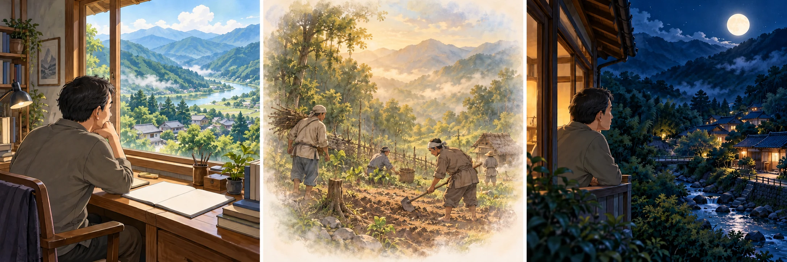
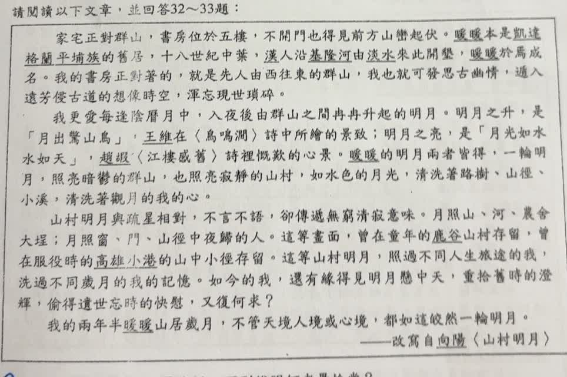

分享原卷｜第 32 題
完整原題
作答所需文章／材料
家宅正對群山，書房位於五樓，不開門也得見前方山巒起伏。暖暖本是凱達格蘭平埔族的舊居，十八世紀中葉，漢人沿基隆河由淡水來此開墾，暖暖於焉成名。我的書房正對著的，就是先人由西往東的群山，我也就可發思古幽情，遁入遠芳侵古道的想像時空，渾忘現世瑣碎。 我更愛每逢陰曆月中，入夜後由群山之間冉冉升起的明月。明月之升，是「月出驚山鳥」，王維在〈鳥鳴澗〉詩中所繪的景致；明月之亮，是「月光如水水如天」，趙嘏〈江樓感舊〉詩裡慨歎的心界。暖暖的明月兩者皆得，一輪明月，照亮暗鬱的群山，也照亮寂靜的山村，如水色的月光，清洗著路樹、山徑、小溪，清洗著觀月的我的心。 山村明月與疏星相對，不言不語，卻傳遞無窮清寂意味。月照山、河、農舍大埕；月照窗、門、山徑中夜歸的人，這等畫面，曾在童年的鹿谷山村存留，曾在服役時的高雄小港的山中小徑存留，這等山村明月，照過不同人生旅途的我，洗過不同歲月的我的記憶。如今的我，還有緣得見明月懸中天、重拾當時的溫輝，偷得遺世忘時的快慰，又復何求？ 我的兩年半暖暖山居歲月，不管天境人境或心境，都如這皎然一輪明月。 ——改寫自向陽〈山村明月〉關於作者在暖暖的山居生活，下列說明何者最恰當？
(A) 社交活動減少，使他得以自在地徜徉山林
(B) 暖暖的月急速升起且清亮如水，遍照山村
(C) 書房面對暖暖群山，可想像昔人開墾情境
(D) 山居澄靜，使他得以找回積極的生活態度
先想一想，再查看答案、解說與原圖
原卷作答：原卷藍筆A，紅筆訂為C
正確答案：C。首段明說面對先人開墾的群山，可發思古幽情、進入想像時空。
逐項解析
| 選項與原句 | 判讀 | 句意與判斷理由 |
|---|---|---|
| (A) 社交活動減少，使他得以自在地徜徉山林 | 不選 | 原文未說社交活動減少，也未建立這與徜徉山林的因果。 |
| (B) 暖暖的月急速升起且清亮如水，遍照山村 | 不選 | 原文是冉冉升起，意為慢慢升起，與急速升起相反。 |
| (C) 書房面對暖暖群山，可想像昔人開墾情境 | 應選 | 首段明說面對先人開墾的群山，可發思古幽情、進入想像時空。 |
| (D) 山居澄靜，使他得以找回積極的生活態度 | 不選 | 原文重點是清寂、忘時、回憶與快慰，沒有說找回積極生活態度。 |
詳細說明與解題步驟
C可直接回扣第一段：書房面對先人由西往東開墾的群山，因此作者發思古幽情，進入想像古人活動的時空。這比憑整篇氣氛推測生活變化更有原文依據。
A看似符合悠閒山居，文章卻沒有交代社交活動減少，也沒有說因此徜徉山林。D同樣把寧靜、快慰擴大成找回積極生活態度，超過文字證據。
B寫「急速升起」，原文卻是「冉冉升起」，意思為慢慢升起；速度相反，即使後面的月光描寫相近，整項仍不正確。
全文白話：作者住在暖暖，書房望向群山，想到先人開墾的歷史。月中明月升起、月光照著山村，也使他的心安定清明。他從當下山村想起童年鹿谷與服役小港的月夜，感到能重溫記憶、暫忘俗事的滿足。
原AI先選A，經使用者指出C後才更正；本題採C，並完整保留文章與原選項，不把沒有寫出的社交變化當成事實。

① 書房正對群山，是首段直接交代
作者說家宅正對群山，書房在五樓，不開門也能看見山巒。先抓這個位置關係，再連到後面思古幽情的描寫，C就能找到明確依據。
② 由群山想到先人，進入想像時空
作者面對先人開墾的群山，便「發思古幽情」，進入過去的想像時空。C把書房望山與想像開墾連起來，正是原文換句話說。
③ 月夜清寂，不等於文中未說的改變
明月是「冉冉升起」，即慢慢升起，B的急速相反。清寂、快慰也不能推出A社交減少，或D從消極轉為積極；這些變化沒有原文證據。
④ C有原文直接證據，氣氛不能代替事實
答案 C：書房望山，引發思古想像
- 位置：書房正對暖暖群山。
- 心思：發思古幽情，想像昔人開墾。
- 選項要有文句依據，不能只因氣氛相近就加入新事實。
核對註記：已核對題幹、全部選項與必要材料；教材對應課次未確認，歸綜合。
原圖（僅本題）
